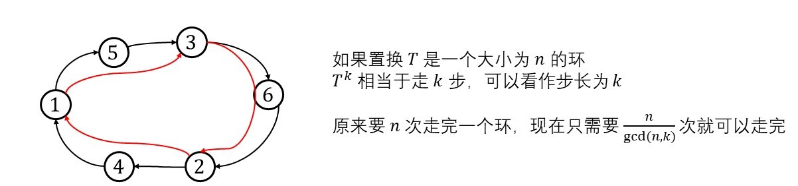

AtCoder Beginner Contest 254
Ex - Multiply or Divide by 2
题目大意，给定两个集合 A 和 B，每一次你可以把 A 中的数 x 替换成 2x
或者把 x 用 ⌊2x⌋ 替换
问最少几次可以让 A,B 两个集合相同（计算重复元素）
方法一，维护堆
对于 A 中的元素 x 与 B 中的元素 y，以上操作影响的是最后一位
- 首先考虑到如果 y 最后一位是 1，但 x 最后一位是 0，那么无解
因为两种操作都不能够在某一位上引入一个 1
- 考虑 y 的最后一位是 0，那么如果 x>y，那么只要令 x≫1
然后比较 x 更高的位，而如果 x<y 呢？
- 考虑 x<y，假设当前处理的是 x 的 i 位与 y 的 j 位
此时令 x≪1，这样 x[i+1] 和 y[j] 都是 0
然后接着比较 x[i] 与 y[j−1]，所以这一步的操作，等价于 y≫1
- 上述是一个 max>max 的问题，可以考虑用两个堆维护
如果 Amax>Bmax，尝试令最大值 x≫1，然后继续比较
反之则需要判断 B 最大值 x 的最后一位是不是 0
- 最后只有在堆为空的时候，算法执行成功
方法二，01-Trie
上述过程还有一种模拟方法，就是用 01-trie 来维护
- 先把所有的数看成 01 串，插入 trie 中，然后 dfs
- 从叶节点自底向上统计，因为我们需要让 A 中的元素 →B
所以插入 trie 的时候，对于 A 集合元素，当它沿着树边走的时候，让沿途节点权值 +1
同理，插入 B 集合，让沿途节点权值 −1，这样如果 trie 中的节点权值为 0
就说明这个位置，A,B 两个集合匹配上了
- 自底向上修改，如果当前字符表示 0，那么根据方法一的分析
如果点的权值 v>0，说明集合 A 中有一些元素比集合 B 中大
对这些元素每一个都执行 ≫1，ans+=v
同理如果 v<0，ans+=∣v∣
- 然后考虑当前字符表示 1，如果 v<0，说明 B 中以 1 结尾的元素个数大于 A 中相应的个数
而这些 1 并不能通过规定的操作删去，所以直接返回错误
否则的话，操作次数为 ans+=v
- 然后回溯到根，就做完了
Rectangle GCD
题目大意，给你两个数组 A[1⋯n],B[1⋯n]，构成 n×n 的矩阵
矩阵中 (i,j) 的值定义为 Ai+Bj
有 Q 个询问，每次询问给出 [h1,h2],[w1,w2]，问 [h1,h2]×[w1,w2] 区域内
所有数的最大公约数
算法分析
对于 GCD，有一个很重要的结论
gcd(x0,x1,x2,⋯,xn)=gcd(x0,x1−x0,x2−x1,⋯,xi−xi−1,⋯)
矩阵的 gcd 可以写成如下形式，对列作差分
⎝⎜⎜⎜⎜⎜⎜⎛Ai+BjAi+1−AiAi+2−Ai+1⋮Ai′−Ai′−1Ai+Bj+1⋯⋯⋯Ai+Bj+2⋯⋯⋯⋯Ai+Bj′⎠⎟⎟⎟⎟⎟⎟⎞
再对行作差分，可以得到
⎝⎜⎜⎜⎜⎜⎜⎛Ai+BjAi+1−AiAi+2−Ai+1⋮Ai′−Ai′−1Bj+1−Bj⋯⋯⋯Bj+2−Bj+1⋯⋯⋯⋯Bj′−Bj′−1⎠⎟⎟⎟⎟⎟⎟⎞
所以所求的 gcd 等于
(Ai+Bj)
(Ai+1−Ai,Ai+2−Ai+1,⋯,Ai′−Ai′−1)
(Bj+1−Bj,Bj+2−Bj+1,⋯Bj′−Bj′−1)
后面两部分，可以用线段树维护 A,B 的差分数组，开两个线段树
然后用线段树的 [i,i′−1],[j,j′−1] 区间来求解
其中差分数组 A′[i]=A[i+1]−A[i]
Codeforces Round 778
D. Potion Brewing Class
题目大意，给定一个正整数序列 An，并且给定 n−1 条关系
每一条关系用 ajai=yx 来描述，保证已知 a 中任意一个元素
可以推出其他元素
对于所有可能的序列 A，求出最小的 ∑ai 并对 998244353 取模
算法分析
如果已知 a1 要推出 ak 怎么办，可以根据如下关系
ak=a1⋅a1a2⋅a2a3⋯ak−1ak
对上述式子加以分析，不难发现，对于一对关系 (a1,a2)，给边赋上权值 a1a2
那么从 a1 转移到 a2 就可以通过 a1⋅a1a2 来完成
对于每一条关系，可以考虑建图，用 dfs 来求解
具体来说，ajai=yx，先换成 aiaj=xy
然后再 (i,j) 之间连一条边，边带上权值（用分数结构体表示） xy
图建好了，那考虑怎么求解？
- 从 1 节点出发 dfs，1 节点的权值赋为 1，对于 (u,v,e)，计算出 v=u⋅e{xy}
然后将节点的权值化为最简分数，pv1
- 然后统计 ∑u，即每个节点的权值，此时直接用模 P 意义下的乘法逆元相加即可
- 最后答案再乘上 lcm(pv)，保证每个节点的权值是整数
算法实现上的细节
为了让写起来更简单一些，可以预处理打表 x 所有的因子 fac(x)，在遍历的时候，从 u→v
统计因子在分母中出现的最大次数，从而统计 lcm
不妨设 v←u⋅xy
先遍历所有 y 的因子 f∈fac(y)，令 cnt[f]−=1
模拟约简的过程 xy→x/y1，对于 x 中所有的因子
f∈fac(x),cnt(f)+=1
这样就统计出了 x/y1 的因子个数
另外我们要统计因子出现的最大个数，所以更新 cnt(f)+=1 的时候
同时更新 mx(f)=max(cnt(f))
最终计算 lcm 的时候依次遍历每一个因子，mx(x) 最多出现多少
就乘上几个 x
E. Arithmetic Operations
题目大意，给你一个长度为 n 的序列 A，问最少修改几个数，使得 A 变成等差数列
Codeforces Round #797 (Div. 3)
F. Shifting String
题目大意，给你一个置换，和一个字符串，问这个初始字符串经过几次置换，能够再变换成原来的串？
首先来看置换的一些性质
性质一
性质一，称为奇偶性，记一个置换序列，比如 (5,2,3,1,4) 逆序对数目为 σ(n)
置换的符号为 (−1)σ(n)
性质二，置换的环分解

如果置换 T 是一个大小为 n 的环，那么 Tk 分解后是大小为 gcd(n,k)n 的环
并且这样的环有 gcd(k,n) 个
证明如下，对于环 T，步长为 k，可以沿着 T 的轨道走
原来需要 n 次走完，现在只需要 gcd(k,n)n 次
所以分解出来的新的环长度为 gcd(n,k)n，并且这样的环有 gcd(n,k) 个
这样不断地轮换下去，每一个环对应原来序列 T 中的下标
imodgcd(n,k)=0,1,2,⋯ 的元素组成
T=(1,3,5,2,4,6)
T2=(1,5,4)(2,6,3)，其中 gcd=2，所以每个循环下标是
按照 mod2 的余数，对下标进行分类
[0]:{0,2,4},[1]:{1,3,5}
所以分解成 T2=(1,5,4)(3,2,6)
继续轮换下去，还可以发现 T7=T
所以一定有 Tk=T(k−1)modn+1
性质三
gcd(n,k)=1 时的情形
同样令 a=T,a′=Tk，初始时，有 a[0]=a′[0]
然后开始考虑沿着轨道走，步长为 k，这样就有 a′[i]=a[ikmodn]
注意下标从 0 开始
有了这些置换的性质之后，这个问题就简单了
- 首先对该置换进行环分解，cycle[i] 这个 vector 表示第 i 个环是哪些数的下标
- 然后我们考虑第 i 个环，假设第 i 个环中有 (1,3,5) 这个元素，我们就把 s1,s3,s5 单独拿出来
令 t=s1s3s5，看看走多少步之后，（假设是 k 步），使得 t→t
具体到算法实现上，可以先对置换 T 生成的所有串打表
T0=s，然后依次打表 {T1，T2,⋯,Tk}
可以写一个 gen 函数来实现：根据置换生成串
对于每一个循环 i，从 j∈[1→k] 检查，将 Tk 中和 cycle(i) 相关的下标取出来，记为 tk
同时把 T0 相关下标取出来，记为 t0，如果 t0=tk
那么很显然循环 i 的幂指就是 mi(i)=j
最后求 lcm(mi(i)) 就是答案
G. Count the Trains
Codeforces Round #789 (Div. 2)
C. Tokitsukaze and Strange Inequality
D. Tokitsukaze and Meeting
E. Tokitsukaze and Two Colorful Tapes
 微信
微信 支付宝
支付宝